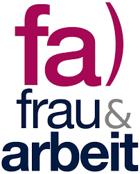

Steckbrief
FLORA HÖLZL
- Alter: 27
- Herkunft: Salzburg
- beruflicher Werdegang: Matura; Gastronomie; Bachelor of Arts in Theater-, Film- und Medienwissenschaft;
- Wunschberuf: Informatikerin
- Lieblingsprogramm im FiT-Kurs: Werkstatt; Codingclub; Selbstverteidigungskurs; Burnoutpräventionskurs; Sexuelle-Belästigungs-Workshop, Testung mit anschließendem Gespräch;
- WIE GEHT ES WEITER?

Workshop: Sexuelle Belästigung am Arbeitsplatz
- Workshopleiterin: Birgit Pircher von Frauen und Arbeit
- Dauer: 6 Stunden
- Inhalte: Definition besprechen; Umgang mit sexueller Belästigung am Arbeitsplatz; Hilfestellungen;
- Übungen: Abstände austesten; Fallbeispiele bewerten;
2-wöchiges Praktikum: Salzburger Marionettentheater
- 19. Juni 2023 - 30. Juni 2023
- Archivierung der Puppen (abmessen, fotografieren, verpacken, verräumen)
- Bildbearbeitung mit Adobe Photoshop
- Erstellung und Unterstützung von Merchandise-Produktion und -Produkten
Bewerbung: Unternehmen
- Bewerbungstraining mit Fr. Resch und Hr. Schütze
- Sichtung und Bewertung der Bewerbungsunterlagen
- Schreiben von Motivationsschreiben
- Tipps für Bewerbungsgespräch
- Bewerbung als Medienfachfrau

Bewerbung: FH Salzburg
- Erstellung der Bewerbungsmappe
- Vorbereitungsgespräch plus Tipps mit Fr. Resch
- Aufnahmeprüfung am 17. Mai 2023: Computer-Test, Gruppenarbeit, persönliches Gespräch
- Zusicherung eines Studienplatzes am 19. Mai 2023
WIE GEHT ES WEITER?
| Juli, August 23 | Ab September 23 |
| Festspiele | FH Salzburg |
| Beginn 12.9.23 |
DANKE
für die Möglichkeit und die Unterstützung
eine zukunftsorientierte Ausbildung
machen zu können!
